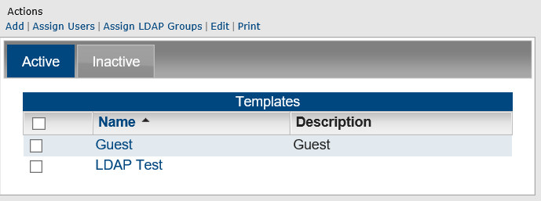
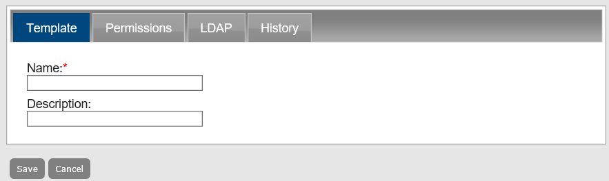
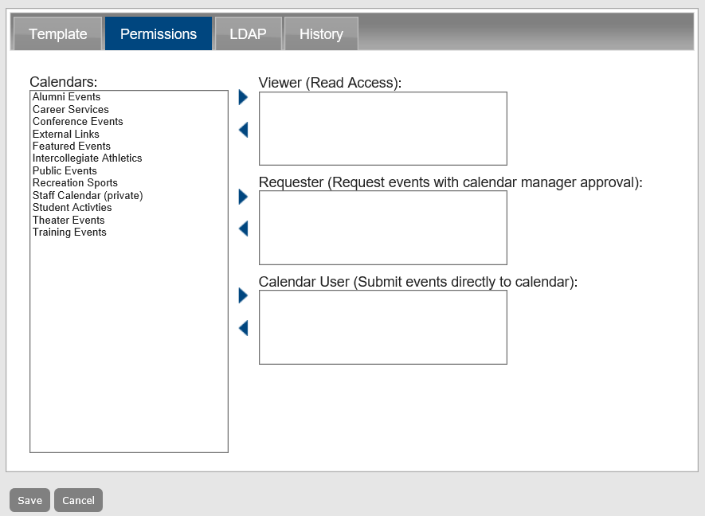
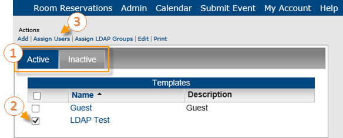
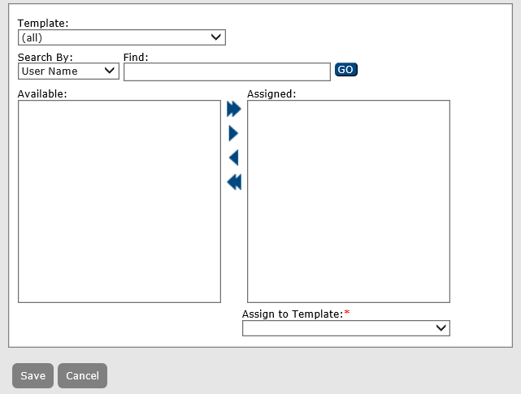
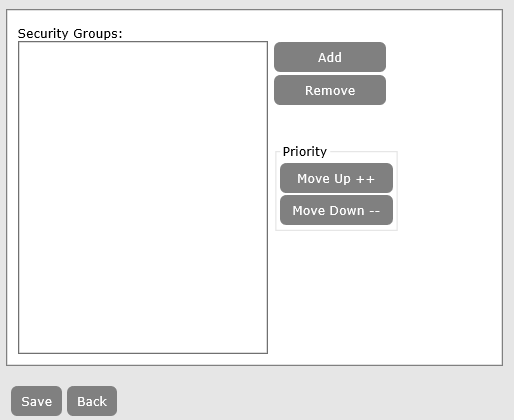
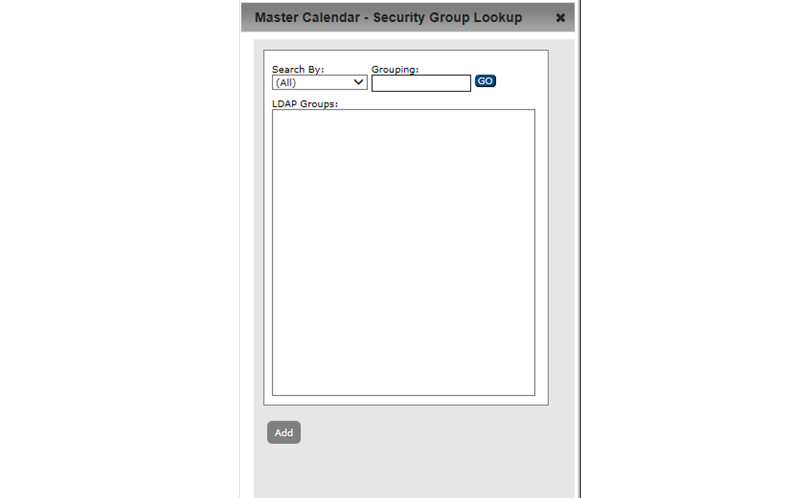
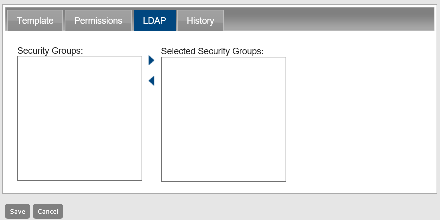

A user template contains a set of calendar permissions. For example, Template A specifies requestor access to Calendar A and view-only access to Calendar B, Template B specifies view-only access to all calendars in Master Calendar, and so on. Templates are always optional. You can apply a template to a group of user records in a single step to simplify the setup and maintenance of Master Calendar.
This topic guides you in creating a new user template and working with existing ones.
TIP: If your organization has purchased and installed the optional EMS Integrated Authentication module, you can select LDAP groups for assignment to a template and you can associate these selected LDAP groups with a User Template.


TIPS: Use the Print option on the page above to generate a report of templates in Master Calendar. On the Inactive tab, you can Delete templates. You can only delete inactive templates.
TIPS: You can use the Active checkbox to control whether the template is active or inactive. The History tab provides a history of this User Template.
| tab | INFORMATION TO EDIT |
|---|---|
Template |
|
Permissions | The type of access that a user with the selected template will have to the calendars in Master Calendar. See Also: Set user template permissions. |
LDAP | The security group information that is maintained on your organization’s network in conjunction with the templates in Master Calendar. See Also: Add LDAP groups to a user template. |
NOTE: Permissions control the type of access users assigned to the template have to a calendar.

The Viewer, Requester, and Calendar User fields indicate the type of access that a user with the selected template will have to the calendars in Master Calendar. Users assigned to the selected template can still view any calendar that remains in the Available Calendars column, unless the calendar is defined as a private.
Calendar Access Type Fields
| FIELD | DESCRIPTION |
|---|---|
Viewer | Users can only view events on the calendar. |
Requester | Users can view events on the calendar and submit events to the calendar; however, the submitted event is posted only if approved by the Calendar Manager. |
Calendar User | Users can view events on the calendar and submit events to the calendar and the events are automatically posted without approval by the Calendar Manager. Calendar Manager is not an option when you are defining templates. It is available only when you are adding or editing a user record. |

The page for assigning users to a template opens.

NOTE: Before you can assign LDAP "Security Groups" to a template, you must select the LDAP groups that you want to assign.
The Assign LDAP Groups option is available only if your organization has purchased and installed the optional Integrated Authentication module. This module allows your organization to use the security group information that is maintained on its own network in conjunction with the templates in Master Calendar to set permissions for its Master Calendar users.

The Security Groups page opens, listing LDAP security groups you can assign to the template.


NOTE: If a user exists in multiple LDAP security groups, then the user’s security settings are assigned based on the LDAP group with the highest priority. For example, if User A is assigned to both the Billing LDAP group and the Cert Publishers LDAP group, and the Billing group has a higher priority (that is, it is higher up in the list) than the Cert Publishers group, then User A’s access security settings are granted based on the Master Calendar template to which the Cert Publishers group is assigned.
